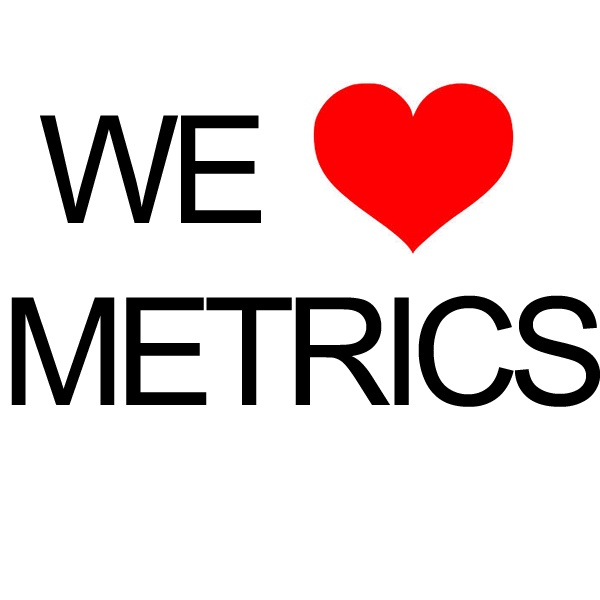
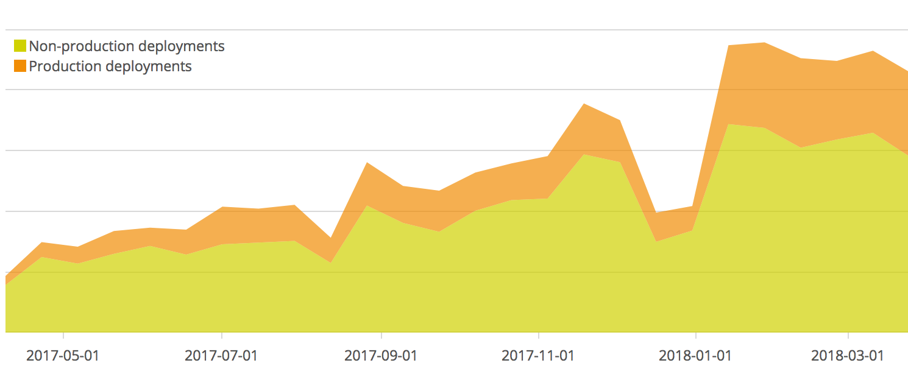
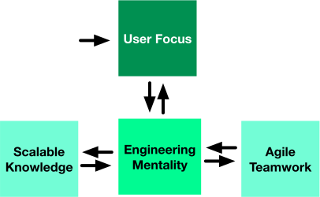
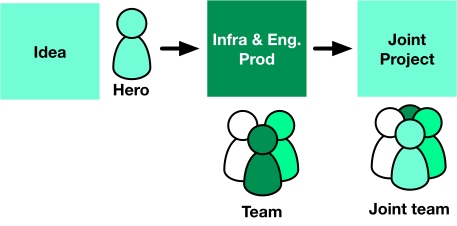
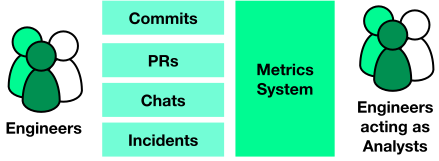

From zero to your first billion requests
Daniel Giribet
Schibsted Platform Services team
About me


The context

Infrastructure and engineering productivity to deliver billions (of low-level requests)
So our product and development teams can build fantastic stuff on top
An effort shared with all engineering teams
Challenge #1 Distributed teams

Challenge #2 Lots of users

Challenge #3 Mindset
Users -> Engineers
End users -> Customers
Love them both
Lessons learnt
The most important takeaway first
Building the teams
Growing the teams
Takeaways
The most important takeaway first
Build up on the fundamentals
Of course this ones
What’s the O() cost of whatever?
What’s the quickest way to count all 1’s in a bit array?
How can a process leave the CPU?
<Insert your fav question here>
But what about others?
What is the psychological phenomenon of ‘anchoring’?
Why do most ecosystems have thriving opportunistic agents?
How do self-replicating ideas propagate?
Are unpredictable rewards more effective?
Do we trust people more if they ask us for help?
Read up on ‘other’ fundamentals


Building the teams
#1 Be prepared to interview a lot
#1.5 Have metrics on hiring

Like we do with any other (engineering) process
Paying attention to the candidate-hire conversion rate (10%?)
#1.6 Allocate plenty of time for interviewing
101 - Number of interviews done in 2016
Close to one every two working days
#2 New teams love
top-down tasks
Forming a new team is hard work
Avoid the mistake of setting a blue sky project like ‘container management’
Set a specific short project instead, with clear value and impact
Team now mature? -> open up domain of work
#3 Have metrics for tool adoption since day one

Growing the teams
Now you have (a) team(s)… what’s next?
- User focus
- Scalable knowledge
- Agile teamwork
- Engineering mentality
User focus
User focus is the root of all team value

#1 Joint projects with product engineering teams
Fast way to (early) team success

#2 Structured support
Supporting the user teams effectively
Avoid chat systems for engineering support
Good old ticketing works better
We gathered data from teams and users both to support the decision ^_^
Make it really easy

Scalable knowledge
Can’t train everybody
Can’t meet everyone
Can’t do joint projects with all teams
Multiple sources of information
“All applications evolve to become Content Management Systems or are eventually replaced by ones that do.”
Wiki-style ticket system Documents Emails PR discussions code issues TODOs in the code Email attachments Markdown YAML ReadTheSource(tm) MyCodeDoesn’tNeedComments(tm) It’s in the production server somewhere
Approach of the digital content industry

It’s the video stoopid
Internal concept and training screencasts work surprisingly well
Agile teamwork
Generate events of your DevOps processes
Commits, PRs, builds, deploys, war-rooms, chats, incidents..
And analyse them like business events data

Key metric - development / operations ratio
If you’re not measuring it continuously, it may not be happening
Make sure you have both Dev and Ops on the equation
Hint - Tag user stories by their nature and leverage estimation
Key metric - Dogfooding
“Were offering such and such for storage, but we’re not using it ourselves, we’re special.”
Adopting your own projects is critical to success
Early, unfiltered feedback is indeed essential
DOGFOODING = (ADOPTED OR FEEDBACK) x NUMBER OF SERVICES
Engineering Mentality
Engineering Mentality challenges
Solve operations problems with development solutions
Usually the alternative is “we need more people”
Or download another (usually newer) software
Download and play
Download a piece of software
Integrate
Boom, instant value
Add metrics, alerts, docs and move on
Extremely successful pattern
Emphasizes a specific set of skills
Endless migration risk
Problem - when something does not quite fit or is not implemented
Solution is usually… download and play something else
We end up spending a significant chunk of our time migrating systems
Long tail migration monster

And then…

And guess what…

All sorts of fun comes next

Download, play, deep dive
Alternative is to download, play and become a domain expert
Only in what is core to you
Higher risk… and reward if done well
Challenge - choose core domain and allocate resources
Content delivery example
Problem - delivering optimised images and documents to end users
Solution - Develop and fine-tune a high performance image/document delivery system

Content delivery example

Cassandra example
Problem - Cassandra backup recovery takes 12h+

Solution - Develop new backup recovery system - x4 times faster
Download, play, contribute
Even better alternative is to download, play, and contribute code]
Only on what is even more core for you
Spinnaker example
Problem - Spinnaker did not support Travis

Developed the support

Other examples
Cluster management, cluster provisioning, content caching and many others…
Benefits from Download, play, contribute
Keep unpracticed skills fresh
Who knows, you may get a competitive advantage
Become an authoritative source of support
Remember managed services
Takeaways
Non-tech fundamentals are also important
Do a structured analysis of teams areas of improvement
Handle your internal users like external ones
Scale knowledge, not only instances
Dogfooding your services will bring greatness
‘Download, play, contribute’ investment pays off
Embrace self-criticism ^_^
Thank you
https://github.com/danigiri/building-devops-teams
 @danielgiri
@danielgiri